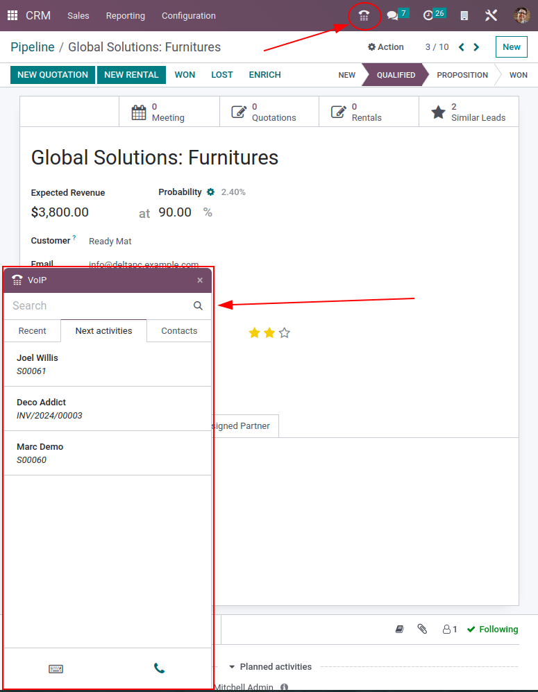
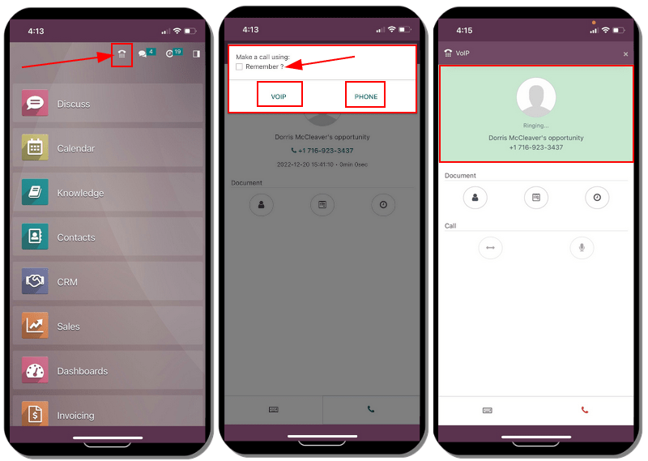

Devices and integrations¶
VoIP can be used on many different devices, such as a computer, tablet, mobile phone, and many more. This is helpful in that it reduces costs, and employees can work from anywhere in the world, so long as they have a broadband internet connection.
Odoo VoIP is SIP (Session Initiation Protocol) compatible, which means it can be used with any SIP compatible application.
This document covers the process of setting up Odoo VoIP across different devices and integrations.
Odoo is fully-integrated with all Odoo apps, allowing users to click into any app, and schedule a call as an activity in the chatter.
Example
For example, in the CRM app, a user can click into an opportunity, and click on Activities in the chatter.
Next, they can choose Call, and under Due Date, they can select a date.
Once they click Save, an activity shows up in the chatter.
Should the Due Date be for today’s date, the activity shows up in the VoIP widget.
Odoo VoIP (laptop/desktop computer)¶
The Odoo VoIP (Voice over Internet Protocol) module and widget can be used from any browser on a laptop or desktop device. Simply click on the ☎️ (phone) icon in the upper-right corner, while in the Odoo database, and the widget appears.
See also
To see how to use the VoIP widget on a desktop/laptop computer, check out this documentation: VoIP widget.
Odoo VoIP (tablet/mobile device)¶
The Odoo VoIP app can be used on tablets and mobile phones, through the Odoo Android or Apple IOS applications. Additionally, a mobile web browser can be used to access the database.
Warning
Odoo Android and Apple IOS applications are no longer being maintained by Odoo on the Android and Apple portals. This means Odoo support only handles limited scopes of Odoo Android or Apple IOS support tickets.
Important
While outgoing calls can be placed using Odoo on a mobile device, be aware that Odoo is not a full VoIP application, and does not ring on incoming calls. If the user needs to be reachable on a mobile device at all times, an app, like Zoiper, should be used. Apps like that stay connected in the background at all times.
For more information, see this documentation: Zoiper Lite.
While in the mobile application on a mobile device/tablet, access the Odoo VoIP widget, by tapping on the ☎️ (phone) icon in the upper-right corner. The widget appears in the lower-left corner.
When first making a call from the tablet using the mobile application, the user is prompted to Allow the database to use the microphone. Click Allow when prompted to continue with the call using the microphone.
This step is necessary, whether using the mobile Odoo application or web browser.

Odoo then asks how to make the call. The two options are : VOIP or Phone (should the tablet be enabled for calling). Click the box next to Remember ? should this decision be the default moving forward.

Here is the layout of what the Odoo VoIP app looks like on a mobile device:
Zoiper Lite¶
Zoiper Lite is a free VoIP SIP dialer with voice and video.
To start using the Zoiper app, download it to the device, via the Zoiper download page.
A mobile device is the most common installation, and this document covers how to set up on the Zoiper IOS application. Screenshots and steps may differ depending on the set up conditions.
After installing the Zoiper application on the mobile phone, open the application, and tap on Settings. Navigate to , and tap on the + (plus) icon to add an account.
If the VoIP account is already set up, then click Yes. This means an account username and password has already been produced.

Next, tap on Select a provider. On the screen that populates, tap Country, in the upper-right corner, to narrow the providers down to a specific country. Choose the country for the provider that is being configured, then find the Provider, and select it.
Example
If the provider being configured is Axivox, then select Belgium. Then, choose Axivox as the provider.
Under SIP options, enter the Account name, Domain, Username, and Password. All this information varies, based on the account.
Tip
To access this information, via the Axivox portal, navigate to . The SIP username, Domain, SIP password, and Address of the proxy server are all present in this tab.
Zoiper Field |
Axivox Field |
|---|---|
Account name |
Can be anything |
Domain |
Domain |
Username |
SIP username |
Password |
SIP password |
Once this account information is entered, click the green Register button at the top of the screen. Once the registration information is checked, Zoiper populates a message, stating Registration Status: OK.
At this point, Zoiper is now set up to make phone calls using the VoIP service.

Linphone¶
Linphone is an open-source VoIP SIP softphone, used for voice, video, messaging (group and individual), as well as conference calls.
To start using the Linphone app, download it to the device, via the Linphone download page.
A mobile device is the most common installation, and this document covers how to set up the Linphone IOS application. Screenshots and steps may differ depending on the circumstances.
To begin configuring Linphone for use with a SIP provider, first open Linphone, and an assistant screen appears.
From this screen, select Use SIP Account. Then, on the following screen, enter the Username, Password, Domain, and Display Name. Once complete, press Login.
At this point, Linphone is ready to start making calls, once there is a green button at the top of the application screen that reads, Connected.

Tip
Linphone makes a variety of applications for mobile and desktop devices in operating systems, such as Windows, Linux, Apple, and Android. Because Linphone is an open-source project, many new updates are released on a regular basis.